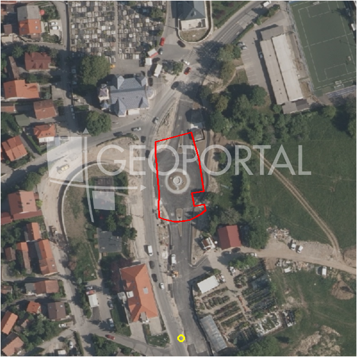

#35639 · Zagreb, Šestine, građevinsko zemljište površine 1.373 m²
Šestine, Podsljeme, Grad Zagreb · zemljiste · njuskalo · status active · oglas ↗
Ocjena
- Score
- 59 rule 59 · LLM – · 12.09.2026.
- RLV
- 926.000 € (869 €/m²) · ratio 1,93
- Ukupna investicija
- 3,77 M€
- GBP
- 1.600 m²
- Feedback
- –
- CRM
- –
Oglas
- Cijena
- 480.550 € (350 €/m²)
- Površina
- 1.373 m² · DKP 1.066 m² (odstupanje -22,3 %)
- Prodavatelj
- agencija · Eurovilla d.o.o.
- Prvi put
- 11.09.2026. · zadnje 11.09.2026. · 0 d na tržištu
Povijest cijene
| Datum | Cijena |
|---|---|
| 11.09.2026. | 480.550 € |
Flagovi
zgrade_bez_rusenja zgrade na čestici bez spomena rušenja (−10)zone_uncertainty zona nije pregledana (reviewed: false) (−5)
llm_pending LLM ekstrakcija/ocjena nedostupna
Komponente score-a
| rlv | {'gbp': 1599.5700000000002, 'kis': 1.5, 'nkp': 1311.6474, 'noi': None, 'rlv': 926162.1574434787, 'ratio': 1.9272961345197768, 'value': None, 'phases': 1, 'profile': 'zagreb_visestambeno', 'gdv_neto': 5036726.016000001, 'cost_soft': 105571.62000000002, 'gdv_bruto': 6295907.5200000005, 'kis_known': True, 'total_inv': 3774105.3700000006, 'cost_build': 2639290.5000000005, 'cost_other': 519860.25000000006, 'cost_sales': 188877.2256, 'demolition': False, 'gbp_source': 'kis', 'rlv_per_m2': 868.510434782609, 'parcel_area': 1066.38, 'parcelation': False, 'roi_on_cost': 0.28450276691665344, 'profit_at_ask': 1073743.4204000002, 'cost_demolition': 0.0, 'total_inv_phase': 3774105.3700000006, 'parcel_area_effective': 1066.38, 'sale_price_per_m2_nkp': 4800.0} |
| hard | [] |
| info | ['llm_pending'] |
| rubric | {'permits': {'max': 5.0, 'detail': {'permit': 'none'}, 'points': 0.0}, 'location': {'max': 15.0, 'detail': {'source': 'benchmark:override:Šestine', 'sale_price_per_m2_nkp': 4800.0}, 'points': 8.75}, 'physical': {'max': 4.0, 'detail': {'slope_pct': 7.38, 'road_access': 'yes', 'slope_points': 2.0}, 'points': 4.0}, 'liquidity': {'max': 3.0, 'detail': {'n_cuts': 0, 'points_cut': 0.0, 'points_days': 0.008333333333333333, 'seller_type': 'agencija', 'points_fresh': 0.5, 'price_cut_pct': None, 'days_on_market': 1, 'points_private': 0}, 'points': 0.51}, 'rlv_ratio': {'max': 25.0, 'detail': {'rlv': 926162, 'ratio': 1.927, 'asking_price': 480550.0}, 'points': 25.0}, 'ticket_fit': {'max': 10.0, 'detail': {'asking_price': 480550.0}, 'points': 9.81}, 'zone_quality': {'max': 8.0, 'detail': {'no_upu': True, 'source': 'gis', 'zone_class': 'mjesovito_pretezito_stambeno', 'zone_ideal': True, 'gp_uredjeni': True}, 'points': 6.0}, 'profit_potential': {'max': 20.0, 'detail': {'roi_on_cost': 0.285, 'profit_at_ask': 1073743}, 'points': 20.0}, 'price_vs_benchmark': {'max': 10.0, 'detail': {'source': 'auto:Podsljeme', 'deviation': -1.188, 'ask_eur_m2': 350, 'benchmark_eur_m2': 160.0}, 'points': 0.0}} |
| weights | {'llm': 0.4, 'rule': 0.6, 'model': 0.0} |
| penalties | {'zone_uncertainty': 5, 'zgrade_bez_rusenja': 10} |
| raw_score | 74,1 |
| rlv_notes | [] |
| flag_notes | {'max_gbp': 1600, 'total_inv': 3774105, 'zone_code': 'M1', 'zone_class': 'mjesovito_pretezito_stambeno', 'zone_source': 'gis', 'zone_reviewed': False, 'commercial_pct': 0.0, 'buildings_share': 0.241, 'commercial_source': 'zone_rule'} |
| caps_applied | [] |
GIS
- Čestica
- k.o. 335258, k.č. 1719/3 (pin_buffer, 0,74); k.o. 335258, k.č. 1755 (pin_buffer, 0,72); k.o. 335258, k.č. 1774 (pin_buffer, 0,72)
- Zona
- M1 (mjesovito_pretezito_stambeno) · NIJE pregledana
- kig / kis / katnost
- 0,40 / 1,50 / Po+P+3+Pk
- GP / UPU
- uredjeni · UPU ne
- Pristup / nagib
- yes · 7,4 % (max 12,5 %)
- More
- –
- Zaštite
- Natura ne · zaštićeno ne · kulturno dobro ne
- Zgrade na čestici
- 24 %
- Match
- 0,74
Karta
Ortofoto (DOF)

RLV kalkulacija — pretpostavke
| gbp | {'value': 1599.5700000000002, 'source': 'kis'} |
| kis | {'value': 1.5, 'source': 'gis'} |
| soft_pct | {'value': 0.04, 'source': 'profil'} |
| nkp_ratio | {'value': 0.82, 'source': 'profil'} |
| cost_other | {'value': 519860.25000000006, 'source': 'profil: doprinosi+uređenje po m² GBP, financiranje+rezerva % gradnje'} |
| parcel_area | {'value': 1066.38, 'source': 'dkp'} |
| asking_price | {'value': 480550.0, 'source': 'oglas'} |
| margin_on_cost | {'value': 0.15, 'source': 'profil'} |
| build_cost_per_m2_gbp | {'value': 1650.0, 'source': 'profil'} |
| sale_price_per_m2_nkp | {'value': 4800.0, 'source': 'benchmark:override:Šestine'} |
| transfer_tax_and_acquisition | {'value': 0.06, 'source': 'profil'} |
Ekstrakcija iz oglasa
| utilities | ['telekomunikacije'] |
| zone_claim | S |
Benchmarks mikrolokacije
| Vrsta | Vrijednost | n | Od | Izvor |
|---|---|---|---|---|
| newbuild_sale_eur_m2_nkp | 4.800 | – | 12.09.2026. | override |
Opis oglasa
Zagreb, Šestine, Dedići, građevinsko zemljište površine 1.373 m², smješteno u lijepom dijelu Šestina. Fronta uz ulicu iznosi 25 metara. Idealna lokacija za gradnju, zemljište je orijentirano prema jugu te s njega pruža prekrasan panoramski pogled na grad. Nalazi se u stambenoj zoni S, urbana pravila 2.2. minimalna građevna čestica 600 m2, mogućnost gradnje 400 BRP po parceli, tri nadzemne etaže, Ki 0,6, tlocrtna izradljivost 30%. Nalazi se u neposrednoj blizini svih potrebnih sadržaja, škola, vrtić, javni prijevoz, dućana. Ovo zemljište predstavlja jedinstvenu priliku za izgradnju obiteljskog doma u mirnom i zelenom okruženju, uz blizinu svih sadržaja i izvrsnu prometnu povezanost. Ostale informacije na upit. Za ovu nekretninu kontaktirajte agenta na broj telefona +385911873829. Više na Eurovilla.hr, ID: 319288. Direktan link: https://eurovilla.hr/nekretnina/zagreb-sestine-gradevinsko-zemljiste-povrsine-1-373-m2/319288/.